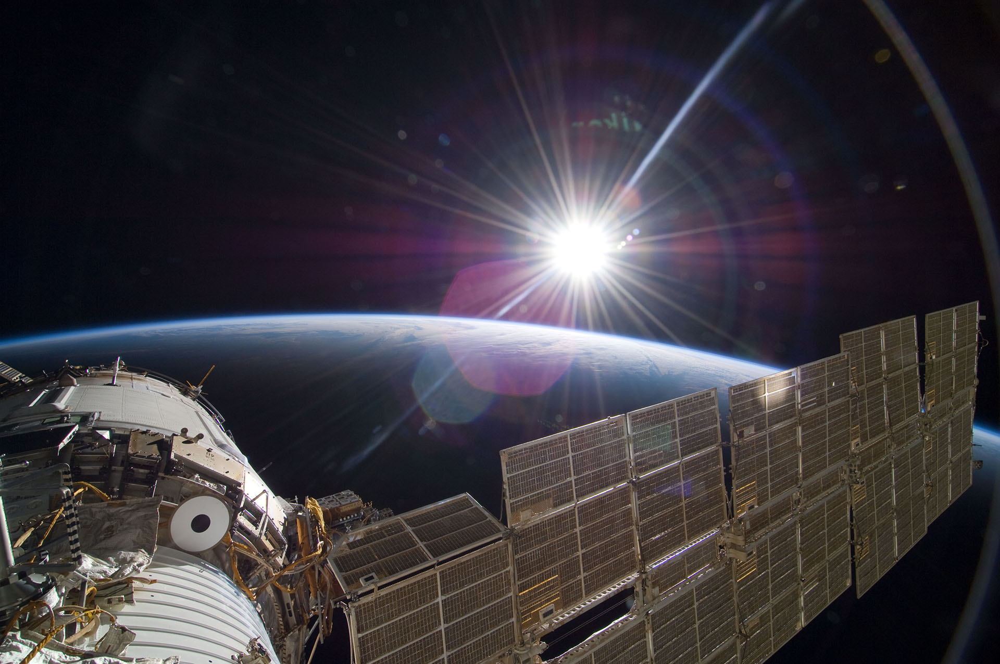
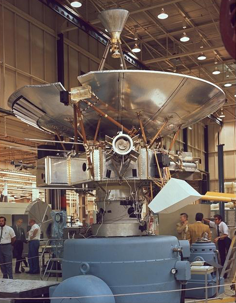
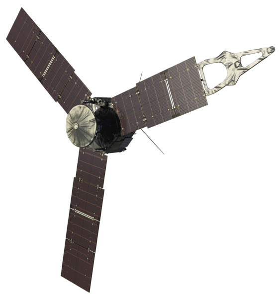
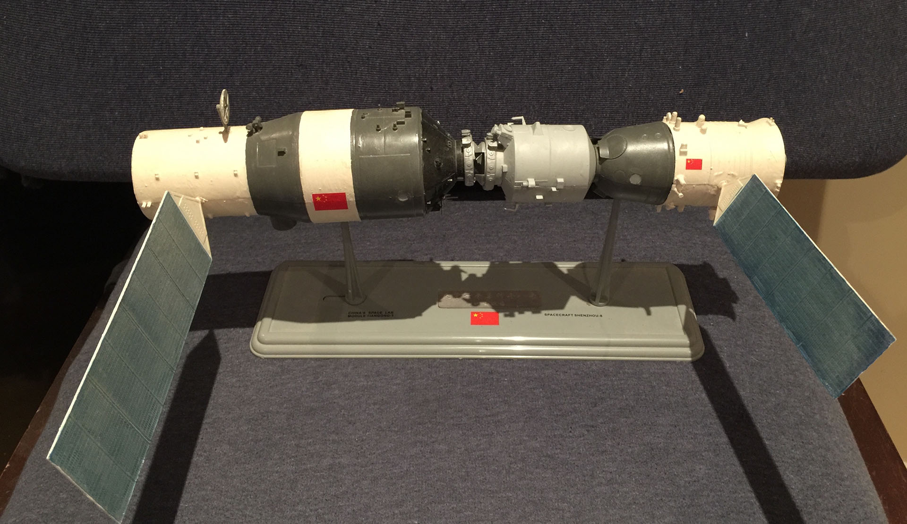

探索星尘
当人类尚在蒙昧阶段的时候，就对遥远的星空充满好奇与探索的欲望， 对星空的观测与对岁时的观察，使天文学成为人类历史最悠久的学科之一。 在今天这个“去魅”的时代，对太空的探索无疑具有了新的、更深层次的思想史意义。
首页＞深空勘测

国际空间站ISS
1993年在美国建造的自由号空 间站基础上，结合俄罗斯研制的和平2号空间站，共同提出设计建造阿尔法号 国际空间站的方案，经过几年的筹备、研制、协调，1998年11月20日，俄罗斯 研制的第一个组件曙光号功能舱成功地发射到空间轨道。
同年12月4日，美 国研制的第二个节点舱团结号发射入轨，两舱对接后成为国际空间站的雏形。 包括6个实验舱、l个居住舱、2个连接舱以及服务、运 输舱。总质量达423吨，长108米，宽88米，密封容积1202立方米，供7名宇 航员在站上工作，成为近地轨道上载人庆期参与各种科研活动的基地。
ISS是一个由六个国际主要太空机构联合推进的国际合作计划，是了解宇宙天体位置、分布、运动结构、物理状态、化学组成及其演变规律的重要手段。

先驱者计划
先驱者计划（Pioneer program）是美国的一系列无人行星探测任务。整个计划分为数个任务，而最著名的是先驱者10号和11号，它们探测外层行星并飞出了太阳系。
先驱者10号于1972年3月发射升空，同年7月飞船就进入了小行星带。先驱者10号飞近木星，在距木星仅13万千米的位置上对木星进行了仔细的观察。通过飞船发回的数据，科学家们发现了木星上的辐射带、确认了木星是一颗液态行星。在飞过木星后，先驱者10号开始了对太阳系外层空间的探索。1997年3月它的外层空间探测任务正式结束，此时飞船已经飞离地球100亿千米，是迄今为止距离我们最远的人造飞行器。
1973年4月发射的先驱者11号的主要探测目标是土星。在路过木星时先驱者11号拍到了木星的大红斑和极地地区的照片。在经过了24亿千米的漫漫航程后，先驱者11号终于到达了土星。飞船获得了第一张土星的近距离照片、发现了土星的几颗小卫星，并绘制了土星磁场的图像。1995年9月，由于飞船上的能量全部耗尽，我们和先驱者11号失去了联系。
作为首批飞出太阳系的人类飞船，先驱者10号和先驱者11号上都携带了一块特殊的金属板。金属板上刻有人类男女的形象、飞船的出发地、一些二进制编码和太阳系相对于14颗脉冲星的位置。希望它能够向外星文明传去关于我们地球人类的信息。

朱诺号Juno
朱诺号（Juno）是NASA环绕木星的太空探测器。
探测器的名字“朱诺”是罗马神话中天神朱庇特的妻子。朱庇特施展法力用云雾遮住自己，但是朱诺却能看透这些云雾，了解朱庇特的真面目，因此探测器取这个名字也是借用其寓意，希望它能解开这颗云遮雾绕的气态巨行星隐藏的秘密。
朱诺号的任务是确定氢氧比例，有效的测量木星上水的丰度；获得更好的木星核心质量评估；探索木星极地的磁层和极光的三维结构和特征等。

天宫二号
天宫二号是在天宫一号目标飞行器备份的基础上，根据天宫一号的任务时改装研制而成。规模与天宫一号基本一致，也是一个长期在轨自动运行、短期载人的飞行器，是中国建造空间站之前进行技术验证的重要阶段。
天宫二号上将开展地球观测和空间地球系统科学、空间应用新技术、空间技术和航天医学等领域的应用和试验，是中国第一个真正意义上的空间实验室，发射时释放伴飞小卫星，将有飞船与之对接，将完成验证空间站的技术，也将接受航天员的访问。